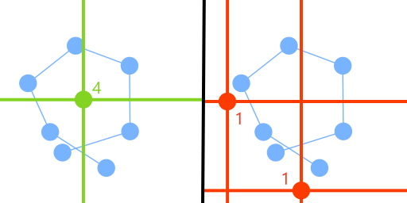

Lilith Huynh
Games Programmer
Tails of Light
itch.io
Unreal Engine 5
About
Tails of Light was our second year AIE student major project. The game is an atmospheric 3D puzzle platformer. It was developed in Unreal Engine 5 with a combination of Blueprints and C++. I was the lead programmer and worked on most of the mechanics.
Tail Mechanic
The tail mechanic was developed early on and is one of the primary ways the player interacts with objects. It works by:
- Checking if the tail loops itself.
- Checking for objects near the tail.
- Checking if the lines from the object all hit.
- Activating the object's interact interface.
The prototype worked by casting a line from the object that is being checked with a line between two points in the array. The wind order is added to based on whether the line is heading in the positive or negative directions along the y-axis.
The implementation it was changed to instead check for 4 directions. This worked more reliably at the cost of having to do more line checks per object.
It has a AABB check for objects and additional checks for performance. The main issue with these is that it checks for the object's origin. If a static mesh's origin isn't roughly near the player's height, the player has to jump up in order to get it within the vertical range of the bounding box.
One of the implementation's considerations is that it really only works horizontally. Having to support another axis of rotation would make it much more complex. My thought is that vertical puzzles would be much harder to design for, especially when the tail has to loop on itself.